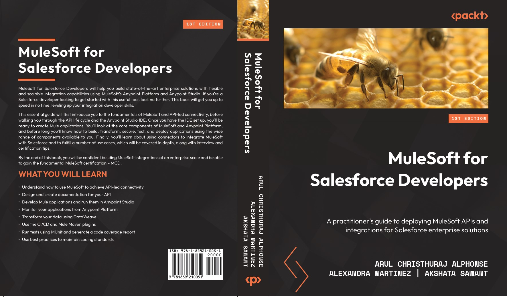

PUBLICATION DATE-SEPTEMBER 2022
Preface
MuleSoft for Salesforce Developers will help you build state-of-the-art enterprise solutions with flexible and scalable integration capabilities using MuleSoft’s Anypoint Platform and Anypoint Studio. If you’re a Salesforce developer looking to get started with this useful tool, look no further. This book will get you up to speed in no time, leveling up your integration developer skills.
Complete with step-by-step explanations of essential concepts, practical examples, and self-assessment questions, this essential guide will first introduce you to the fundamentals of MuleSoft and API-led connectivity, before walking you through the API life cycle and the Anypoint Studio IDE. Once you have the IDE set up, you’ll be ready to create Mule applications. We’ll look at the core components of MuleSoft and Anypoint Platform, and before long, you’ll know how to build, transform, secure, test, and deploy applications using the wide range of components available to you. Finally, you’ll learn about using connectors to integrate MuleSoft with Salesforce and fulfill a number of use cases, which will be covered in depth, along with interview and certification tips.
By the end of this book, you will be confident in building MuleSoft integrations at an enterprise scale. Also, it’ll help you to pass the fundamental MuleSoft certification –
MuleSoft Certfied Developer (MCD) – Level 1.

Who this book is for
This book is aimed at Salesforce developers who want to get started with MuleSoft. There’s an increasing demand for cross-cloud solutions that involve integrating MuleSoft with the core Salesforce platform or one of the Salesforce cloud offerings, such as Service Cloud, Marketing Cloud, and Commerce Cloud. Salesforce architects will also find the concepts covered in the book useful in designing Salesforce solutions.
It’s helpful if you have knowledge/prior experience with any programming language and some basic integration concepts.
Some basic familiarity with Salesforce development and experience with Salesforce APIs is expected – at least SOAP API, REST API, Bulk API, or Streaming API.
What this book covers
Chapter 1, Introduction to APIs and MuleSoft, covers what no-code and low-code technologies are, what APIs and integrations are, the different MuleSoft products, what application networks are, and what the API-led connectivity approach is.
Chapter 2, Designing Your API, explores the API life cycle and how to create an API specification and
fragments using RAML, fundamentals of REST and SOAP API and HTTP protocol, capabilities of
API Manager, and API Design best practices.
Chapter 3, Exploring Anypoint Studio, covers how to download Anypoint Studio from the official
website, install it on the system, and perform the required configuration. After the installation, we
will develop the new Mule application and run it inside Anypoint Studio.
Chapter 4, Introduction to Core Components, covers the basics of a Mule Event, the flow, and the
sub-flow. It introduces us to several components, scopes, routers, transformers, and flow controls in
Mule. It also examines error handling and batch processing in Mule 4.
Chapter 5, All About Anypoint Platform, delves into the Anypoint Platform components, such as Design
Center – API Designer, Exchange, API Manager, Runtime Manager, and Anypoint Monitoring. At the
end of this chapter, we will be familiar with how to create an API using Design Center, how to publish
the API in Exchange, how to create the API in API Manager to enforce the policies, what Runtime
Manager is, and how to monitor applications from Anypoint Platform.
Chapter 6, Learning DataWeave, covers an introduction to DataWeave if you’re new to the language.
We discuss what DataWeave is, how scripts are created, how to add comments, and what data types,
data formats, operators, variables, functions, selectors, scopes, and conditionals are.
Chapter 7, Transforming with DataWeave, focuses on learning more about the DataWeave modules and
some of the most used functions in real life. We also learn about the Transform Message component
to use DataWeave in Anypoint Studio.
Chapter 8, Building Your Mule Application, explains how to build a Mule application using different
configuration and properties files, and also covers Scheduler Endpoint, the APIkit router, and Object
Store.
Chapter 9, Deploying Your Application, explores the different deployment options available in MuleSoft,
how to deploy an application to CloudHub, how to download and install a Mule on-premises server,
how to deploy a Mule application to an on-premises server, and also how to build a CI/CD pipeline
using Mulesoft.
Chapter 10, Secure Your API, covers the need to secure your API with the help of policies, explores
the capabilities of API Manager, and more about MuleSoft’s security features.
Chapter 11, Testing Your Application, examines MUnit, MUnitTools, different operations, and how to
create test suites and test cases using MUnit. We will also see how MUnit can speed up the development
process and the test recorder.
Chapter 12, MuleSoft integration with Salesforce, covers how to leverage the capabilities of MuleSoft
to integrate Salesforce with other end-systems. It also covers Salesforce connectors, accelerators, and
templates and several capabilities of MuleSoft to make integration easy. It also covers about MuleSoft
Composer to simplify integrations.
To get the most out of this book xvii
In the API-based approach, we will access the Salesforce objects via the API to access the information
in real time. In the event-based approach, we will listen to the Salesforce topic to receive the message
and process it synchronously to the required backend system.
Chapter 13, MuleSoft Connectors and Use Cases, delves into the different modules (File, FTP, SFTP,
Database, Slack, SOAP, VM, and JMS) available in MuleSoft. In the File-based modules (File, FTP,
and SFTP), we will connect to the system and read the file. We will also send the file through different
connectors. In the Database module, we will perform the required connector configuration to a specific
database and read/insert records from/to the database. This chapter also covers the different modules,
such as Slack, Web Service Consumer (SOAP), VM, and JMS connectors.
Chapter 14, Best Practices, Tips, and Tricks, covers the MuleSoft best practices, guidelines, coding
standards, tips, and tricks.
Chapter 15, Certification and Interview Tips, explores the different career paths you can choose in
the MuleSoft ecosystem, what the different MuleSoft certifications are and some tips to get certified,
what the different available trainings are, how to contribute to the MuleSoft community, and some
interview tips for your first MuleSoft position.